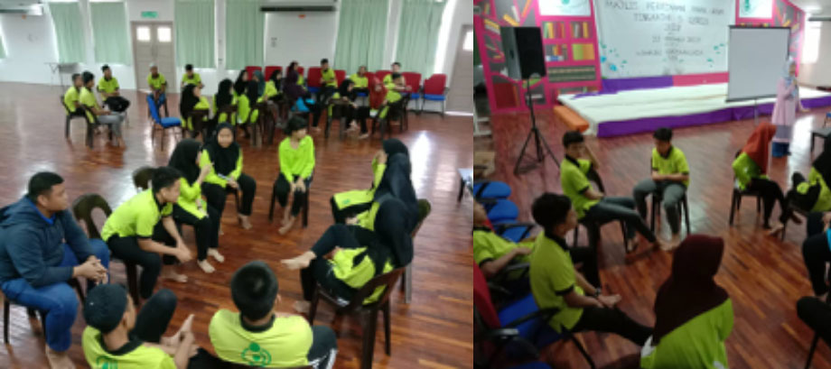

Home
Objective
Mission & Vision
Organization Chart
History
Bulletin & Activities
Location
Branch
Gallery
Contact Form
PERYATIM Patreon
Y.A.B Datuk Amar Hajjah Juma'ani Tun Tuanku Haji Bujang
Board Members
Chairperson
YBhg. Datu Haji Misnu bin haji Taha
Chairperson Deputy
Tuan Haji Iskandar bin Haji Razali
Scretary
Tuan Haji Mohamad Azrai bin Haji Karim
Treasurer
Tuan Haji Kipli bin Rosli
Exclusive Members
Ybhg. Datuk Haji Abdul Kadir Sahib
Ybhg. Dato Haji Mohamad Yusnar bin Haji Matalie
Dr. Sadiah binti Mohamad Ali
Ybhg. Datin Hajjah Noraini binti Haji Hussin
Cr. Haji Julaihi bin Haji Mohamad
Ybhg. Dato Rakayah binti Haji Madon
Pn. Nor Aishah Tan binti Abdullah
Buletin Post
Nasyid

Mass lectures
About Us
Know us
Follow Me